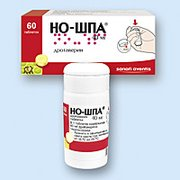
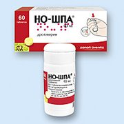

Глицин - простейшая алифатическая аминокислота, единственная протеиногенная аминокислота, не имеющая оптических изомеров. Неэлектролит. Glycys — сладкий, из-за сладковатого вкуса аминокислоты. Применяется в медицине в качестве ноотропного лекарственного средства.
Ношпа - лекарственное средство, обладающее спазмолитическим, миотропным, сосудорасширяющим, гипотензивным действием.
Морфин - забудьте о нём,он плохой (бяка).